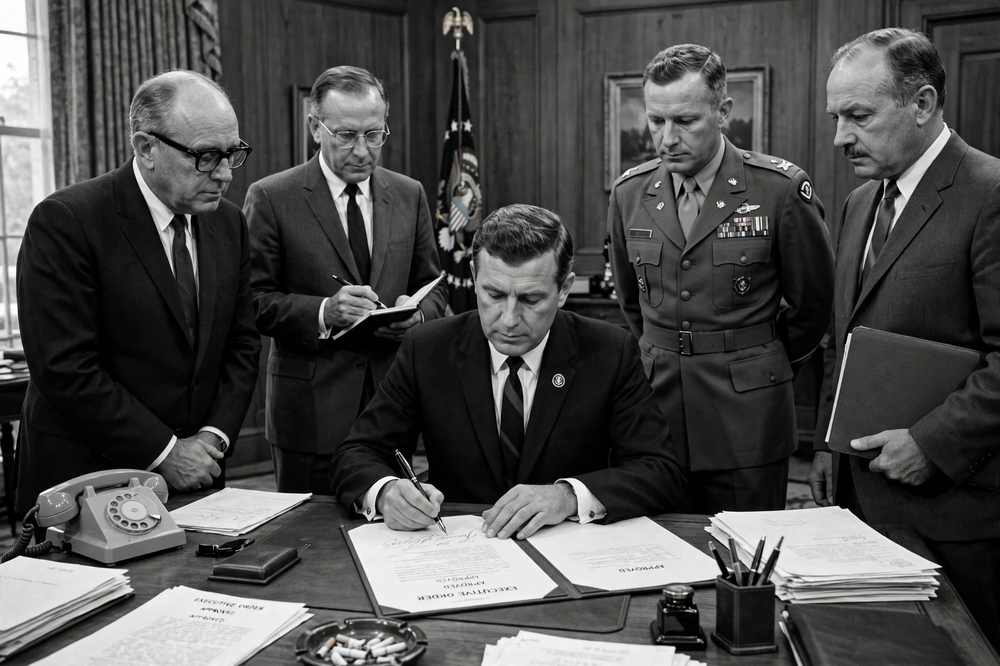

| Enacted by | 89th United States Congress |
|---|---|
| Signed | 6 August 1965, by President Lyndon B. Johnson |
| Codification | 52 U.S.C. §§ 10101–10702 |
| Purpose | Enforce the Fifteenth Amendment; outlaw discriminatory voting practices |
The Voting Rights Act of 1965 is a landmark piece of federal legislation in the United States that prohibits racial discrimination in voting. It was signed into law by President Lyndon B. Johnson during the height of the civil rights movement on August 6, 1965, and Congress later amended it five times to expand its protections.
Although the Fifteenth Amendment (1870) guaranteed African-American men the vote, Southern states used poll taxes, literacy tests, grandfather clauses and intimidation to disenfranchise Black citizens for nearly a century. The civil rights movement's campaign in Selma, Alabama — climaxing in the "Bloody Sunday" attack on peaceful marchers on 7 March 1965 — created the political impetus for strong federal legislation. Johnson addressed Congress on 15 March 1965 in the celebrated "We Shall Overcome" speech.
Section 2 of the Act applies nationwide and bans any voting practice that results in the denial or abridgement of the right to vote on account of race or colour. Sections 4 and 5 were its most powerful tools: a coverage formula identified jurisdictions with a history of discrimination, where literacy tests were suspended, federal examiners could register voters, and — under Section 5 "preclearance" — no change to voting rules could take effect until approved by the U.S. Attorney General or a federal court. Other provisions authorised federal election observers and banned poll taxes in state elections (achieved fully by the Twenty-fourth Amendment and the Supreme Court's Harper v. Virginia decision).
The Act transformed Southern politics: Black voter registration in Mississippi rose from about 7 percent in 1964 to nearly 60 percent by 1967, and the number of Black elected officials grew from a few hundred to many thousands. Congress reauthorised the Act in 1970, 1975, 1982 and 2006, each time extending preclearance.
In Shelby County v. Holder (2013), the Supreme Court struck down the Section 4(b) coverage formula as unconstitutional, effectively disabling preclearance. Afterwards, several previously covered states enacted new voting rules, and efforts to pass a revised formula in Congress have repeatedly stalled.